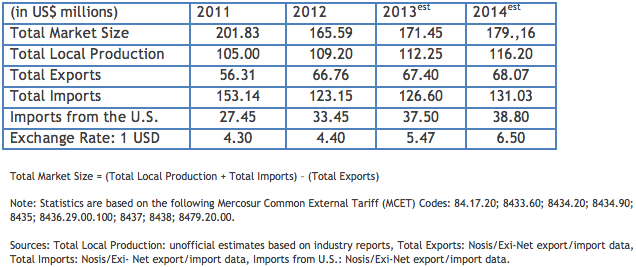

Market Estimates
Overview
Sub-Sector Best Prospects
Opportunities
Web Resources

2011 import market share: United States: 17.9.4%; Italy: 17.3 %; Brazil: 12.5%; Germany: 7%
2012 import market share: United States: 27.1%; Italy: 14.2 %; Brazil: 10.3%; Germany: 10%
The U.S. continues to hold its position as the largest supplier of food processing equipment to Argentina. Although local production figures are almost non-existent, imports are estimated to account for 70 to 85 percent of the total market. Imports peaked 2011 and while they decreased in 2012 due to overall economic conditions, imports from the U.S. regained market share. Imports are expected to return to moderate growth levels during 2013 and beyond.
Return to Top
The segments that grew most in 2012 were machinery for the dairy processing industry, and machines for cleaning, sorting or grading seed, grain or dried leguminous vegetables. U.S. exports may continue to find opportunities in the following specialized areas: machines for cleaning, sorting or grading seed, grain or dried leguminous vegetables; equipment for fat and vegetable oil extraction and processing; machinery for the preparation of fruits, nuts or vegetables; and presses, crushers and similar machinery, used in the manufacture of wine, cider, fruit juices or similar beverages.
Return to Top
While imports decreased in general in 2012, imports from the U.S. grew 22 percent, regaining their traditional market share. The food processing equipment market in Argentina relies heavily on imports by large domestic food processing companies and food exporters.
Argentina is the world's No. 3 soybean exporter, and the leader in soy oil and soy meal exports. It is also a top corn exporter. Expectations for record soybean and corn crops may continue to trigger investment in appropriate processing equipment.
Argentina remains a key market for U.S. exports to Latin America. U.S. products are often sought out, particularly in the higher-end technology segment. However, recent controls imposed by the Argentine government have made exporting goods from any country to Argentina more difficult. It is important for would-be exporters to Argentina to confirm that their Argentine customer has received all the necessary permits (see “Trade Regulations and Standards” report for more information).
Return to Top
Among food processing related websites in Argentina are: http.www.copal.com.ar; http://www.adepia.org.
Return to Top